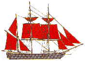
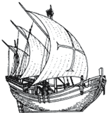
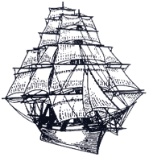
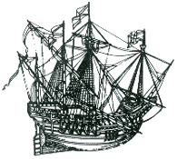
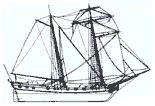

Pour de plus amples informations à propos des navires, venez discuter sur le forum des écumeurs des mers dans la rubrique des navires
| Barque |  | Le trois-mâts barque est un navire portant un mât de misaine, un grand mât et un mât de barque supportant seulement une brigantine, au lieu de l'artimon, du perroquet de fougue et de la perruche |
| Caravelle |  | Bâtiment du XVe et XVIe siècle à deux mâts, élancé, généralement gréé d'une voile latine. Le dessin représente une caravelle portugaise. |
| Clipper |  | Trois-mâts à haute voilure, très rapide. Chaque mât peut porter jusqu'à 7 voiles carrées : Grande voile, hunier fixe, hunier volant, perroquet fixe, perroquet volant, cacatois et contre-cacatois ou papillon. |
| Galion |  | Grand bâtiment de charge du XVIIe siècle, à trois ou quatre-mâts à voiles carrés, lourd, armé de 60 à 70 canons. C'est le navire qui transportait les trésors, l'or et l'argent des colonies espagnoles et portugaises d'Amérique. 50 à 60 mètres de longueur, 20 à 25 mètres de largeur, avec un château de quatre à cinq étages à l'arrière. |
| Goélette |  | Navire léger à voiles, gréé à voiles auriques (en forme de trapèze) sur cornes, où le mât principal est le mât arrière. |